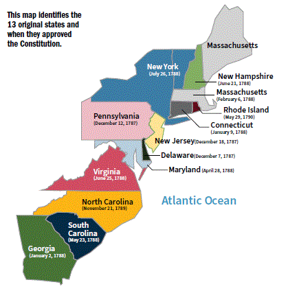

NOTE: click on red numbers to see related questions from the 2025 citizenship test.
NOTA: haga clic en los números rojos para ver las preguntas relacionadas del examen de ciudadanía de 2025.
[p8]
In this chapter, you will learn about:
The U.S. Constitution was written in 1787.[q82] It is the oldest written constitution in the world. The Constitution sets up the government and enshrines the basic rights of the American People.[q3]
The Constitution was written during the period when the country was created. Another word for created is "founded." The period when the country was created is called the Founding Era. In 1787, famous leaders from around the country like George Washington, Benjamin Franklin, James Madison, and Alexander Hamilton came to Philadelphia, Pennsylvania, for a Constitutional Convention. The leaders who met at the Constitutional Convention are sometimes called the Founders. The Founders wrote the Constitution at the Constitutional Convention.
When the Founders wrote the Constitution in 1787, it had a Preamble and seven sections. There have been changes made to the Constitution since it was written. A change to the Constitution is called an amendment.[q5] There are 27 amendments to the Constitution.[q7] The 27 amendments are listed after the seven sections of the original Constitution.
[p8]
En este capítulo, aprenderá sobre:
La Constitución de los Estados Unidos fue escrita en 1787. Es la constitución escrita más antigua del mundo. La Constitución establece el gobierno y consagra los derechos básicos del pueblo estadounidense.
La Constitución fue escrita durante el período en que se creó el país. Otra palabra para "creado" es "fundado". El período en que se creó el país se llama la Era Fundacional. En 1787, líderes famosos de todo el país como George Washington, Benjamin Franklin, James Madison y Alexander Hamilton llegaron a Filadelfia, Pensilvania, para una Convención Constitucional. Los líderes que se reunieron en la Convención Constitucional a veces se llaman los Fundadores. Los Fundadores escribieron la Constitución en la Convención Constitucional.
Cuando los Fundadores escribieron la Constitución en 1787, tenía un Preámbulo y siete secciones. Se han hecho cambios a la Constitución desde que se escribió. Un cambio a la Constitución se llama enmienda. Hay 27 enmiendas a la Constitución. Las 27 enmiendas están listadas después de las siete secciones de la Constitución original.
[p9]
["Scene at the Signing of the Constitution," by Howard Chandler Christy. Courtesy of the Library of Congress.]
[p9]
["Escena de la firma de la Constitución", por Howard Chandler Christy. Cortesía de la Biblioteca del Congreso.]
The beginning of the Constitution is called the Preamble. The Preamble to the Constitution explains why the Founders wrote the Constitution.
The Preamble also says that under the Constitution, the people of the United States will have self-government. This means that the people of the United States are not governed by a king or a queen. Instead, the people of the United States govern themselves. [q1] The people of the United States govern themselves by electing representatives who serve in the local, state, and U.S. governments.
The idea of self-government is in the first three words of the Constitution. These words are, "We the people".[q4]
[The Constitution of the United States. Courtesy of the National Archives.]
El comienzo de la Constitución se llama el Preámbulo. El Preámbulo de la Constitución explica por qué los Fundadores escribieron la Constitución.
El Preámbulo también dice que bajo la Constitución, el pueblo de los Estados Unidos tendrá autogobierno. Esto significa que el pueblo de los Estados Unidos no es gobernado por un rey o una reina. En cambio, el pueblo de los Estados Unidos se gobierna a sí mismo. El pueblo de los Estados Unidos se gobierna a sí mismo eligiendo representantes que sirven en los gobiernos locales, estatales y de los Estados Unidos.
La idea del autogobierno está en las primeras tres palabras de la Constitución. Estas palabras son, "Nosotros el Pueblo".
[La Constitución de los Estados Unidos. Cortesía de los Archivos Nacionales.]
[p10]
The first three sections of the Constitution set up the U.S. government.[q3] These sections of the Constitution describe the three branches or parts of the U.S. government. The U.S. government is also called the federal government.
The three branches of government are called the Legislative Branch, the Executive Branch, and the Judicial Branch.[q16]
U.S. Government
Legislative Branch (Congress) | Executive Branch (President) | Judicial Branch (Supreme Court)
The Legislative Branch is also called Congress. There are two parts to the U.S. Congress. They are called the House of Representatives and the Senate.[q19]
Two Parts of Congress
U.S. Congress: U.S. House of Representatives | U.S. Senate
[p10]
Las primeras tres secciones de la Constitución establecen el gobierno de los Estados Unidos. Estas secciones de la Constitución describen las tres ramas o partes del gobierno de los Estados Unidos. El gobierno de los Estados Unidos también se llama el gobierno federal.
Las tres ramas del gobierno se llaman el Poder Legislativo, el Poder Ejecutivo y el Poder Judicial.
Gobierno de los Estados Unidos
Poder Legislativo (Congreso) | Poder Ejecutivo (Presidente) | Poder Judicial (Corte Suprema)
El Poder Legislativo también se llama Congreso. Hay dos partes en el Congreso de los Estados Unidos. Se llaman la Cámara de Representantes y el Senado.
Dos Partes del Congreso
Congreso de los EE.UU.: Cámara de Representantes de los EE.UU. | Senado de los EE.UU.
[p11]
The President of the United States is in charge of the Executive Branch.[q17] Other parts of the Executive Branch include:[q46]
The parts of the Judicial Branch are the Supreme Court and other federal courts.
The Supreme Court is the highest court in the U.S. [q5]
[The U.S. Capitol in Washington, D.C.]
[p11]
El Presidente de los Estados Unidos está a cargo del Poder Ejecutivo. Otras partes del Poder Ejecutivo incluyen:
Las partes del Poder Judicial son la Corte Suprema y otros tribunales federales.
La Corte Suprema es el tribunal más alto de los Estados Unidos.
[El Capitolio de los Estados Unidos en Washington, D.C.]
[p12]
During the Constitutional Convention, the Founders were afraid that if one person or group has too much power, then they could take over the country. They decided to separate the powers of government so that no one person or group could become too powerful. The Constitution gives each branch of government different powers. This is called "separation of powers." Separation of powers stops one branch from becoming too powerful.[q15]
The powers of each branch of government are:
[p12]
Durante la Convención Constitucional, los Fundadores temían que si una persona o grupo tiene demasiado poder, entonces podría tomar el control del país. Decidieron separar los poderes del gobierno para que ninguna persona o grupo pudiera volverse demasiado poderoso. La Constitución otorga a cada rama del gobierno diferentes poderes. Esto se llama "separación de poderes". La separación de poderes evita que una rama se vuelva demasiado poderosa.
Los poderes de cada rama del gobierno son:
3 Ramas del Gobierno
Poder Legislativo (hace las leyes federales)
Poder Ejecutivo (hace cumplir las leyes federales)
Poder Judicial (revisa las leyes federales)
Constitución (proporcionó una separación de poderes)
Congreso: Senado, Cámara de Representantes
Presidente, Vicepresidente, Gabinete
Corte Suprema, Otros Tribunales Federales
[p13]
The Constitution also lists the powers that the federal government has, such as the power to protect the people of the United States.
For example, under the Constitution, the federal government has the power to create an army to defend the nation, and to declare war if the[q58] U.S. has been attacked or is under threat.
The federal government also has the power to make treaties.[q58] A treaty is an agreement between two or more countries. Sometimes the federal government signs treaties with other countries to end wars or conflicts. Other times, the federal government signs treaties with countries to work together on issues like trade.
Another power that the federal government has under the Constitution is to print money.[q58] Only the U.S. government has the power to print the dollar bills and coins that people use for money in the United States.
[Members of the U.S. military. U.S. coins and currency. Signing of mutual cooperation treaty with Japan in the East Room of the White House, January 1960. Courtesy of the Library of Congress.]
[p13]
La Constitución también enumera los poderes que tiene el gobierno federal, como el poder de proteger al pueblo de los Estados Unidos.
Por ejemplo, bajo la Constitución, el gobierno federal tiene el poder de crear un ejército para defender la nación, y de declarar la guerra si los Estados Unidos han sido atacados o están bajo amenaza.
El gobierno federal también tiene el poder de hacer tratados. Un tratado es un acuerdo entre dos o más países. A veces el gobierno federal firma tratados con otros países para terminar guerras o conflictos. Otras veces, el gobierno federal firma tratados con países para trabajar juntos en temas como el comercio.
Otro poder que tiene el gobierno federal bajo la Constitución es imprimir dinero. Solo el gobierno de los Estados Unidos tiene el poder de imprimir los billetes de dólar y las monedas que la gente usa como dinero en los Estados Unidos.
[Miembros de las fuerzas armadas de los EE.UU. Monedas y billetes de los EE.UU. Firma del tratado de cooperación mutua con Japón en el Salón Este de la Casa Blanca, enero de 1960. Cortesía de la Biblioteca del Congreso.]
[p14]
The fourth section of the Constitution explains how state governments are set up. This section also explains how new states can join the United States.
The Constitution says that each state will have a government that has a legislative branch, an executive branch, and a judicial branch.
The person in charge of the executive branch for a state government is called a governor. Each of the 50 states has a governor.
To find out who is the governor of your state now[q61], please visit: usa.gov/state-governor.
Under the Constitution, powers not delegated to the United States by the Constitution, nor prohibited by it to the states, are reserved for the states respectively, or to the people.
For example, state governments have the power to provide the people of their state with protection and safety.[q59] One way that state governments do this is by providing the people in their state with police departments and fire departments.
State governments also have the power to provide the people of their state with schooling and education.[q59] Each state in the U.S. has its own educational system for students in grade school, colleges and universities, and adult education programs.
Washington, D.C., does not have a governor because it is not a U.S. state. Washington, D.C., residents should answer that D.C. does not have a governor.
[Students in a U.S. classroom. Fighting fires is among a state's powers.]
[p14]
La cuarta sección de la Constitución explica cómo se establecen los gobiernos estatales. Esta sección también explica cómo los nuevos estados pueden unirse a los Estados Unidos.
La Constitución dice que cada estado tendrá un gobierno que tiene un poder legislativo, un poder ejecutivo y un poder judicial.
La persona a cargo del poder ejecutivo de un gobierno estatal se llama gobernador. Cada uno de los 50 estados tiene un gobernador.
Para saber quién es el gobernador de su estado ahora, por favor visite: usa.gov/state-governor.
Bajo la Constitución, los poderes no delegados a los Estados Unidos por la Constitución, ni prohibidos por ella a los estados, están reservados para los estados respectivamente, o para el pueblo.
Por ejemplo, los gobiernos estatales tienen el poder de proporcionar al pueblo de su estado protección y seguridad. Una forma en que los gobiernos estatales hacen esto es proporcionando al pueblo de su estado departamentos de policía y departamentos de bomberos.
Los gobiernos estatales también tienen el poder de proporcionar al pueblo de su estado educación y escolarización. Cada estado en los Estados Unidos tiene su propio sistema educativo para estudiantes en la escuela primaria, colegios y universidades, y programas de educación para adultos.
Washington, D.C., no tiene gobernador porque no es un estado de los Estados Unidos. Los residentes de Washington, D.C., deben responder que D.C. no tiene gobernador.
[Estudiantes en un aula de los Estados Unidos. Combatir incendios está entre los poderes de un estado.]
[p15]
The fifth section of the Constitution explains how the Constitution can be changed. A change to the Constitution is called an amendment.[q5] The Founders wanted the people of the United States to be able to make changes to the Constitution. They believed that in order to have self-government, the people of the United States should be able to make changes to the Constitution and the government.
For an amendment to be added to the Constitution it must be approved by three-fourths of the states in the United States. Today there are 50 states in the U.S. That means that 38 out of the 50 states must approve an amendment for it to be added to the Constitution. There are 27 amendments to the Constitution.[q7]
[p15]
La quinta sección de la Constitución explica cómo se puede cambiar la Constitución. Un cambio a la Constitución se llama enmienda. Los Fundadores querían que el pueblo de los Estados Unidos pudiera hacer cambios a la Constitución. Creían que para tener autogobierno, el pueblo de los Estados Unidos debería poder hacer cambios a la Constitución y al gobierno.
Para que una enmienda sea añadida a la Constitución debe ser aprobada por tres cuartas partes de los estados en los Estados Unidos. Hoy hay 50 estados en los Estados Unidos. Eso significa que 38 de los 50 estados deben aprobar una enmienda para que sea añadida a la Constitución. Hay 27 enmiendas a la Constitución.
The sixth section of the Constitution says the Constitution is the supreme law of the land in the United States.[q2] This means that everyone living in the United States must follow the Constitution. In the United States, we support the "rule of law."[q13] This means that we believe that no one is above the law[q13], and everyone must follow the law.[q13] This also means that the U.S. government, state governments, and local governments must follow the Constitution and the rule of law.
[Statue of Lady Justice]
La sexta sección de la Constitución dice que la Constitución es la ley suprema de la nación en los Estados Unidos. Esto significa que todos los que viven en los Estados Unidos deben seguir la Constitución. En los Estados Unidos, apoyamos el "estado de derecho". Esto significa que creemos que nadie está por encima de la ley, y todos deben seguir la ley. Esto también significa que el gobierno de los Estados Unidos, los gobiernos estatales y los gobiernos locales deben seguir la Constitución y el estado de derecho.
[Estatua de la Dama de la Justicia]
[p16]
The seventh section of the Constitution says that the people of the United States had to approve the Constitution for it to become the law of the land.
When the Founders wrote the Constitution, there were 13 states in the U.S. The Constitution says that nine of the 13 original states must approve the Constitution.
In 1788, New Hampshire became the ninth state to approve the Constitution, and all 13 original states approved the Constitution by 1790.
This map identifies the 13 original states and when they approved the Constitution.
[p16]
La séptima sección de la Constitución dice que el pueblo de los Estados Unidos tuvo que aprobar la Constitución para que se convirtiera en la ley de la nación.
Cuando los Fundadores escribieron la Constitución, había 13 estados en los Estados Unidos. La Constitución dice que nueve de los 13 estados originales deben aprobar la Constitución.
En 1788, New Hampshire se convirtió en el noveno estado en aprobar la Constitución, y los 13 estados originales aprobaron la Constitución para 1790.
Este mapa identifica los 13 estados originales y cuándo aprobaron la Constitución.
[Mapa que muestra: Océano Atlántico, New Hampshire (21 de junio de 1788), Massachusetts (6 de febrero de 1788), Rhode Island (29 de mayo de 1790), Connecticut (9 de enero de 1788), Nueva York (26 de julio de 1788), Nueva Jersey (18 de diciembre de 1787), Pensilvania (12 de diciembre de 1787), Delaware (7 de diciembre de 1787), Virginia (28 de abril de 1788), Maryland (25 de junio de 1788), Carolina del Norte (21 de noviembre de 1789), Carolina del Sur (23 de mayo de 1788), Georgia (2 de enero de 1788)]
When the Constitution was written in 1787, it did not list any of the rights of individuals. Many of the Founders believed that the Constitution should include a list of the rights of people living in the United States.
The Founders decided to add 10 amendments to the Constitution. The first 10 amendments to the Constitution are called the Bill of Rights.[q6] The Bill of Rights lists some of the basic rights of people living in the United States.
There are 27 amendments to the Constitution.[q7] Some of the amendments that were added to the Constitution after the Bill of Rights describe who can be a U.S. citizen, and who can vote in elections in the United States.
[The Bill of Rights to the U.S. Constitution.]
[p17]
Cuando se escribió la Constitución en 1787, no enumeraba ninguno de los derechos de los individuos. Muchos de los Fundadores creían que la Constitución debería incluir una lista de los derechos de las personas que viven en los Estados Unidos.
Los Fundadores decidieron agregar 10 enmiendas a la Constitución. Las primeras 10 enmiendas a la Constitución se llaman la Declaración de Derechos. La Declaración de Derechos enumera algunos de los derechos básicos de las personas que viven en los Estados Unidos.
Hay 27 enmiendas a la Constitución. Algunas de las enmiendas que se agregaron a la Constitución después de la Declaración de Derechos describen quién puede ser ciudadano de los Estados Unidos, y quién puede votar en las elecciones en los Estados Unidos.
[La Declaración de Derechos de la Constitución de los Estados Unidos.]
[p17]
[p11]
Question 1 asks about the "form of government of the U.S." but this question's answers do not appear in the text of the 2025 Study Guide. The answer "representative democracy" is implied here. Other acceptable answers are "republic" and "constitution-based federal republic".
La pregunta 1 trata sobre la "forma de gobierno de Estados Unidos" y la respuesta implícita es "representative democracy". Otras respuestas aceptables son "repúblic" y "federal republic based on the Constitutión".
What is the form of government of the United States?
What is the supreme law of the land? *
Name one thing the U.S. Constitution does.
The U.S. Constitution starts with the words "We the People." What does "We the People" mean?
How are changes made to the U.S. Constitution?
What does the Bill of Rights protect?
How many amendments does the U.S. Constitution have? *
Name two important ideas from the Declaration of Independence and the U.S. Constitution.
What is the economic system of the United States? *
What is the rule of law?
There are three branches of government. Why?
Name the three branches of government.
The President of the United States is in charge of which branch of government?
What part of the federal government writes laws?
What are the two parts of the U.S. Congress?
Name one power of the president.
The executive branch has many parts. Name one.
What does the President's Cabinet do?
What does the judicial branch do?
Name one power that is only for the federal government.
Name one power that is only for the states.
Who is the governor of your state now? *
What founding document was written in 1787?
George Washington is famous for many things. Name one. *
James Madison is famous for many things. Name one.